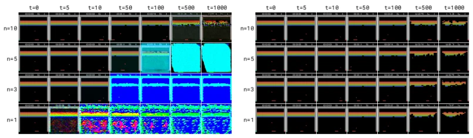
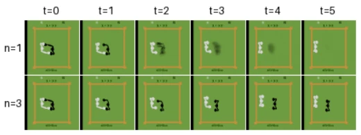
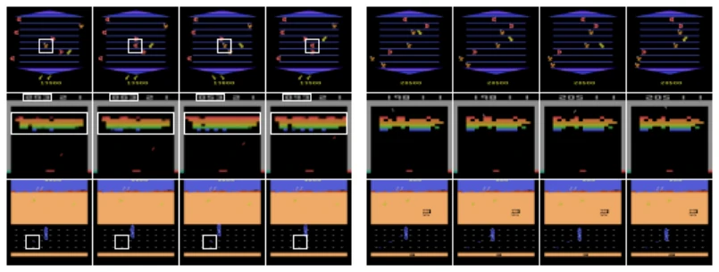
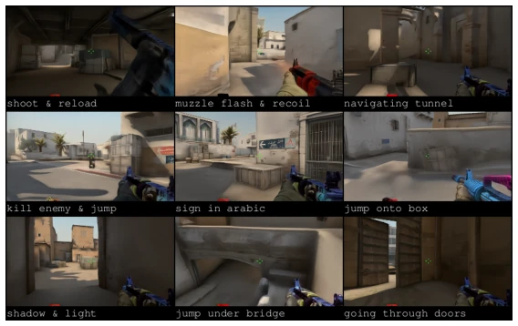
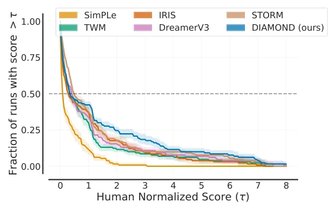
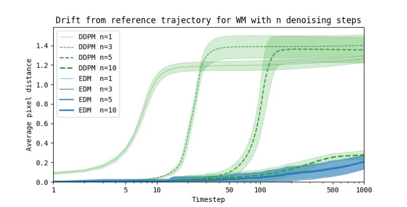
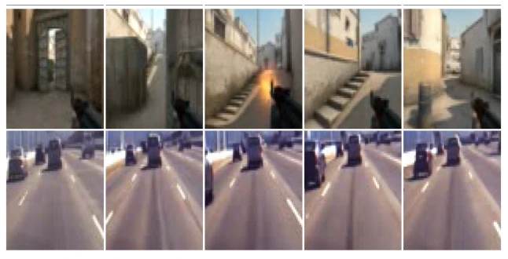
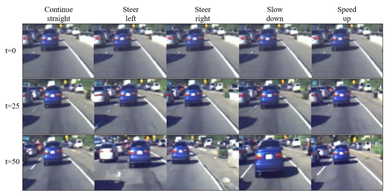
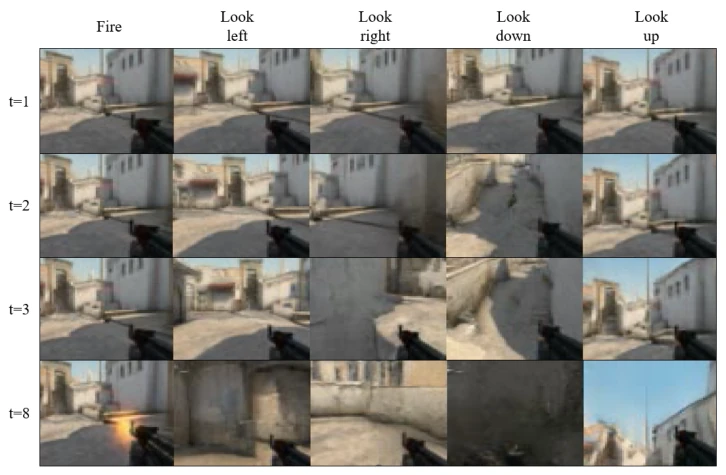

DIAMOND achieved a new record for world model agents on Atari 100k, with a score of 1.46 being notably impressive, surpassing established baselines such as DreamerV3. However, do not rush to acclaim; this primarily involves competition across 26 games and is trained within 'imagination', remaining distant from the real world. Most interestingly, it employs diffusion models as world models; while this addresses the issue of detail loss in discrete latent variables, the inference cost remains high. The CS:GO demo appears quite impressive, but fundamentally relies on static data training; in the event of real-time interaction, model hallucinations (e.g., jumping twice) would still be exposed. In summary, visual details are indeed crucial, but one should not expect immediate deployment for autonomous driving; currently, it resembles a high-quality simulator rather than a general-purpose brain.
Existing world models (e.g., DreamerV3, IRIS) predominantly utilize discrete latent variables; while this can mitigate error accumulation, the compression process discards critical visual information (Micheli et al., 2023). In RL, minor visual discrepancies (e.g., traffic lights, enemies) can determine the success or failure of policies. Diffusion models have become mainstream in image generation, offering better modeling of continuous spaces and multimodal distributions, and are readily conditionable. Although the concept of world models proposed by Ha and Schmidhuber (2018) is promising, sample efficiency remains a bottleneck. This paper aims to leverage the advantages of diffusion models to enhance visual fidelity while maintaining the sample efficiency of world models, thereby addressing the information loss caused by discrete encoding.

Figure 3: Imagined trajectories with diffusion world models based on DDPM (left) and EDM (right). The initial observation at t = 0 is common, and each row corresponds to a decreasing number of denoising steps n. We observe that DDPM-based generation suffers from compounding error, and that the smaller the number of denoising steps, the faster the error accumulates. In contrast, our EDM-based world model appears much more stable, even for n = 1.
The overall workflow is 'collect data in reality -> train diffusion world model -> train RL agent in imagination'. The core innovation lies in the choice of diffusion paradigm: abandoning traditional DDPM in favor of the EDM (Karras et al., 2022) framework. EDM's preconditioning strategy enables the network to predict effectively under both low and high noise levels, avoiding error accumulation in DDPM with a small number of steps. The model architecture employs a 2D U-Net, providing historical memory via frame stacking, with actions injected through adaptive group normalization. Reward and termination predictions are managed by an independent CNN-LSTM model and are not directly integrated into the diffusion process. During sampling, the Euler method is utilized to balance quality with NFE (number of function evaluations). Furthermore, addressing partial observability, the model predicts the next frame by conditioning on historical observations and actions, ensuring consistency between generated trajectories and actions.

Figure 4: Single-step (top row) versus multi-step (bottom row) sampling in Boxing. Movements of the black player are unpredictable, so that single-step denoising interpolates between possible outcomes and results in blurry predictions. In contrast, multi-step sampling produces a crisp image by driving the generation towards a particular mode. Interestingly, the policy controls the white player, so his actions are known to the world model. This information removes any ambiguity, and so we observe that both single-step and multi-step sampling correctly predict the white player’s position.
In the Atari 100k benchmark test, involving 26 games with a 100k step limit, DIAMOND achieved an average human-normalized score of 1.46, surpassing DreamerV3, IRIS, and others. Regarding visual quality, compared to IRIS, DIAMOND generates more stable trajectories without inconsistencies such as enemies transforming into rewards. CS:GO experiments demonstrate that the model can generate stable trajectories, yet hallucinations persist over long horizons (e.g., continuous jumping). Ablation studies indicate that EDM is more stable than DDPM, and 3-step sampling outperforms 1-step. Performance curves reveal excellent performance in most games, though optimization is still required in certain games.

Figure 5: Consecutive frames imagined with IRIS (left) and DIAMOND (right). The white boxes highlight inconsistencies between frames, which we see only arise in trajectories generated with IRIS. In Asterix (top row), an enemy (orange) becomes a reward (red) in the second frame, before reverting to an enemy in the third, and again to a reward in the fourth. In Breakout (middle row), the bricks and score are inconsistent between frames. In Road Runner (bottom row), the rewards (small blue dots on the road) are inconsistently rendered between frames. None of these inconsistencies occur with DIAMOND. In Breakout, the score is even reliably updated by +7 when a red brick is broken3.

Figure 6: Images captured from people playing with keyboard and mouse inside DIAMOND’s diffusion world model. This model was trained on 87 hours of static Counter-Strike: Global Offensive (CS:GO) gameplay (Pearce and Zhu, 2022) to produce an interactive neural game engine for the popular in-game map, Dust II. Best viewed as videos at https://diamond-wm.github.io.

Figure 7: Performance profiles, i.e. fraction of runs above a given human normalized score.

Figure 8: Average pixel drift between an imagined trajectory and the corresponding reference trajectory collected with an expert in Breakout. The trajectories are each 1000 timesteps, starting from the same frame and following the same sequence of actions. Each line displays the average and shaded standard deviation of 400 reference trajectories held out from training data. DDPM becomes more stable with increasing number of denoising steps, but is less stable than 1-step EDM, even with 10 denoising steps. The drift we observe for EDM corresponds to differences in the imagined trajectory rather than a pathological color shift as we see in Figure 3a.
其他图片Other Figures

Figure 10: Example trajectories sampled every 25 timesteps from DIAMOND (frame stack) for the modern 3D first-person shooter CS:GO (top row), and real-world motorway driving (bottom row).

Figure 11: Effect of fixed actions on sampled trajectories in motorway driving. Conditioned on the same initial observations, we rollout the model applying differing actions. Interestingly, the model has learnt to associate ’Slow down’ and ’Speed up’ actions to the whole traffic slowing down and speeding up.

Figure 12: Effect of fixed actions on sampled trajectories in CS:GO. Conditioned on the same initial observation, we rollout the model applying differing actions. Whilst in immediate frames these have the intended effect, for longer roll-outs the observations can degenerate. For instance, it would have been very unlikely for the human demonstrator to look directly into ground in this game state, so the world model is unable to generate a plausible trajectory here, and instead snaps onto another area of the map when looking down does make sense.